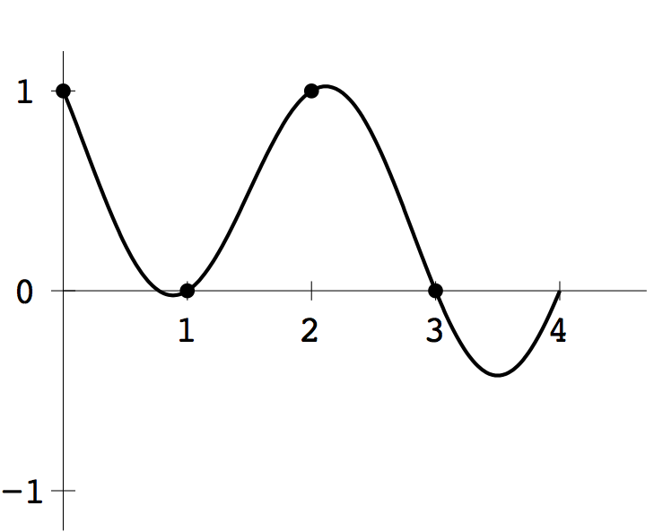
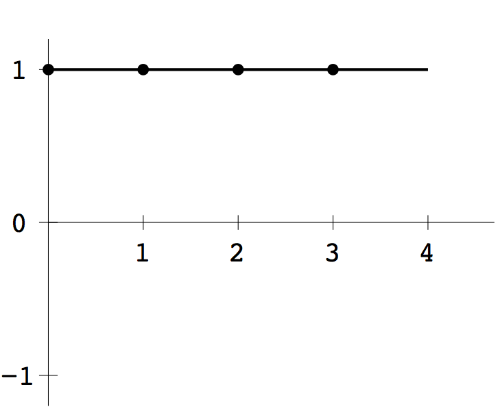
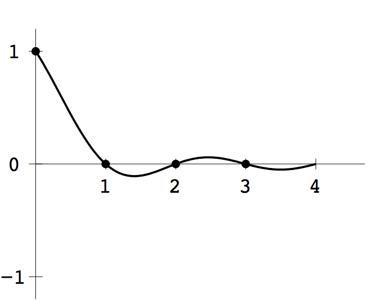
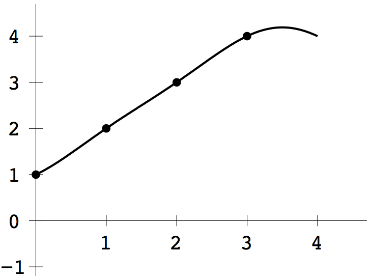

COMPUTER PROBLEMS 11.1
\(\def\ds{\displaystyle} \)
1
Compute \(y=Cx\), where \(C\) is the \(4\times 4\) DCT matrix. Then plot the interpolating function from Theorem 11.2. The results are shown below.
   